Alcance: EH4-01, SD-01 a SD-04. Fuente: EH4000_historial_grietas.xlsx. RAW no modificado; 0 mm se conserva distinto de NULL.
Se encontraron 3 mediciones NULL, 0 filas duplicadas según (Fecha, Equipo, Código), 0 decrementos del horómetro y 4 filas de evento documental, agrupadas en 1 fecha(s). La anotación del 2025-01-07 identifica una reparación general; se excluyen de velocidad los intervalos que tocan el evento.
MEASUREMENT_TOLERANCE_MM = 10 mm; aplica únicamente a cambios entre inspecciones. structural_state se calcula con L RAW y límites oficiales, sin tolerancia.
Conteos change_class: {'STABLE_WITHIN_TOLERANCE': 79, 'SIGNIFICANT_GROWTH': 7, 'SIGNIFICANT_DECREASE_REVIEW': 0, 'MAINTENANCE_RESET': 4, 'N_I': 10}.
| fecha | codigo | delta_L_raw | previous_classification | new_classification | delta_L_effective | fila_excel |
|---|---|---|---|---|---|---|
| 2024-05-19 | SD-01 | -10.0 | WARNING_DECREMENT_REVIEW | STABLE_WITHIN_TOLERANCE | 0.0 | 178 |
Hojas: Léame, Historial, Puntos. Columnas Historial: Fecha, Equipo, Horas (h), Inspector, Zona, Código, Descripción, L actual (mm), Comentario, Imagen. Columna de imagen presente: sí; imágenes embebidas no se usan para inferir mediciones.
Referencias del Excel sin archivo externo: EH4_SD_tijeras_spindle.png. El Word contiene el esquema oficial de ubicación SD; no se recibió una fotografía histórica de campo. La aplicación lo presenta como esquema, no como evidencia fotográfica.
| test | status | detail |
|---|---|---|
| hojas_requeridas | PASS | Hojas: ['Léame', 'Historial', 'Puntos'] |
| columnas_historial | PASS | Ausentes: [] |
| columnas_puntos | PASS | Ausentes: [] |
| fechas_parseables | PASS | No parseables: 0 |
| horas_numericas | PASS | No numéricas: 0 |
| medicion_numerica_o_null | PASS | NULL preservados: 3 |
| codigos_solo_SD01_SD04 | PASS | Códigos: ['SD-01', 'SD-02', 'SD-03', 'SD-04'] |
| equipo_consistente | PASS | Candidatos SD fuera de equipo: 0 |
| zona_consistente | PASS | Candidatos SD fuera de zona: 0 |
| descripciones_consistentes_con_catalogo | PASS | Comparación con hoja Puntos |
| limites_caution_menor_danger | PASS | Leídos de hoja Puntos |
| duplicados_fecha_equipo_codigo | PASS | Filas duplicadas: 0 |
| cuatro_filas_por_inspeccion | PASS | Fechas con recuento distinto a 4: 0 |
| cuatro_puntos_por_fecha | PASS | Fechas con distinto número de códigos: 0 |
| horas_consistentes_en_fecha | PASS | Fechas inconsistentes: 0 |
| inspector_consistente_en_fecha | PASS | Fechas inconsistentes: 0 |
| imagen_consistente_en_fecha | PASS | Fechas inconsistentes: 0 |
| referencias_imagen_resolubles | WARNING | Referencias sin archivo externo en DATOSCRUDOS: ['EH4_SD_tijeras_spindle.png'] |
| fechas_no_nulas | PASS | Fecha de inspección parseada |
| horometro_no_nulo_por_fecha | PASS | Horómetro deduplicado por fecha |
| structural_state_uses_raw_and_official_limits | PASS | Estado validado exclusivamente con L RAW y umbrales oficiales; tolerancia no aplicada |
| delta_effective_applies_tolerance_only | PASS | Tolerancia operacional ±10 mm |
| growth_rates_follow_class_policy | PASS | Tasa RAW conservada; efectiva respeta NULL, mantenimiento y tolerancia |
| change_class_partition | PASS | Clases: {'STABLE_WITHIN_TOLERANCE': 79, 'SIGNIFICANT_GROWTH': 7, 'SIGNIFICANT_DECREASE_REVIEW': 0, 'MAINTENANCE_RESET': 4, 'N_I': 10} |
| n | 24 |
|---|---|
| media | 35.38 |
| mediana | 35.00 |
| desv. estándar | 4.98 |
| mínimo | 30.00 |
| máximo | 53.00 |
| Q1 | 31.75 |
| Q3 | 37.25 |
| IQR | 5.50 |
| MAD | 3.00 |
| CV | 0.14 |
| n | 24 |
|---|---|
| media | 574.78 |
| mediana | 566.45 |
| desv. estándar | 72.72 |
| mínimo | 457.60 |
| máximo | 721.70 |
| Q1 | 518.90 |
| Q3 | 644.80 |
| IQR | 125.90 |
| MAD | 63.80 |
| CV | 0.13 |
Cercas robustas IQR: días [23.50, 45.50]; horas [330.05, 833.65]. Detección descriptiva, no dictamen de error.
| Punto | Caution | Danger | Máximo | Fecha máximo | Primera >0 | Primera alerta | Primera crítica | Normal | Alerta | Crítico | N/I |
|---|---|---|---|---|---|---|---|---|---|---|---|
| SD-01 | 140 | 200 | 200.00 | 2024-10-10 00:00:00 | 2023-05-09 00:00:00 | 2024-04-18 00:00:00 | 2024-10-10 00:00:00 | 18 | 5 | 2 | 0 |
| SD-02 | 140 | 200 | 90.00 | 2024-11-15 00:00:00 | 2023-10-30 00:00:00 | N/D | N/D | 24 | 0 | 0 | 1 |
| SD-03 | 35 | 50 | 25.00 | 2024-10-10 00:00:00 | 2024-04-18 00:00:00 | N/D | N/D | 24 | 0 | 0 | 1 |
| SD-04 | 35 | 50 | 0.00 | 2023-01-16 00:00:00 | N/D | N/D | N/D | 24 | 0 | 0 | 1 |
| Fecha | Equipo | Horas (h) | Inspector | Código | Zona | Descripción | L actual (mm) | Comentario | Imagen | fila_excel |
|---|---|---|---|---|---|---|---|---|---|---|
| 2023-06-09 | EH4-01 | 43626.8 | INSP-03 | SD-03 | Tijeras y spindle (suspensión delantera) | Metal base de spindle, lado derecho | NaN | NaN | EH4_SD_tijeras_spindle.png | 60 |
| 2023-08-23 | EH4-01 | 44940.0 | INSP-01 | SD-02 | Tijeras y spindle (suspensión delantera) | Metal base de tijeras, lado izquierdo | NaN | NaN | EH4_SD_tijeras_spindle.png | 83 |
| 2024-01-09 | EH4-01 | 47308.1 | INSP-03 | SD-04 | Tijeras y spindle (suspensión delantera) | Metal base de spindle, lado izquierdo | NaN | NaN | EH4_SD_tijeras_spindle.png | 133 |
| severity | fecha | codigo | campo | valor_observado | valor_anterior | explicacion | posible_causa | accion_sugerida | fila_excel | change_class |
|---|---|---|---|---|---|---|---|---|---|---|
| INFO | 2023-06-09 | SD-03 | L actual (mm) | None | NaN | Medición vacía preservada como N/I; no equivale a 0 mm. | Punto no inspeccionado o medición no disponible | Confirmar motivo de ausencia | 60.0 | None |
| INFO | 2023-08-23 | SD-02 | L actual (mm) | None | NaN | Medición vacía preservada como N/I; no equivale a 0 mm. | Punto no inspeccionado o medición no disponible | Confirmar motivo de ausencia | 83.0 | None |
| INFO | 2024-01-09 | SD-04 | L actual (mm) | None | NaN | Medición vacía preservada como N/I; no equivale a 0 mm. | Punto no inspeccionado o medición no disponible | Confirmar motivo de ausencia | 133.0 | None |
| MAINTENANCE_EVENT | 2025-01-07 | SD-01 | Comentario | Equipo sale de reparación general de chasis | NaN | Comentario documental que indica intervención/reparación general de chasis. | Reparación general documentada | Confirmar alcance y puntos intervenidos; segmentar serie | 250.0 | None |
| MAINTENANCE_EVENT | 2025-01-07 | SD-02 | Comentario | Equipo sale de reparación general de chasis | NaN | Comentario documental que indica intervención/reparación general de chasis. | Reparación general documentada | Confirmar alcance y puntos intervenidos; segmentar serie | 251.0 | None |
| MAINTENANCE_EVENT | 2025-01-07 | SD-03 | Comentario | Equipo sale de reparación general de chasis | NaN | Comentario documental que indica intervención/reparación general de chasis. | Reparación general documentada | Confirmar alcance y puntos intervenidos; segmentar serie | 252.0 | None |
| MAINTENANCE_EVENT | 2025-01-07 | SD-04 | Comentario | Equipo sale de reparación general de chasis | NaN | Comentario documental que indica intervención/reparación general de chasis. | Reparación general documentada | Confirmar alcance y puntos intervenidos; segmentar serie | 253.0 | None |
| WARNING | 2023-01-16 | SD-01 | Imagen | EH4_SD_tijeras_spindle.png | NaN | El Excel referencia un archivo externo no incluido en DATOSCRUDOS. El Word aporta un esquema SD de ubicación, no una fotografía histórica de inspección. | El paquete fuente no incluye el PNG histórico referenciado | Mantener la ausencia explícita; usar el esquema como referencia de ubicación y solicitar fotos solo si se requieren como evidencia histórica | 10.0 | None |
| WARNING | 2025-01-07 | delta_dias | 53.0 | NaN | Intervalo fuera de cercas IQR 1.5; es atípico estadístico, no prueba de error. | Cadencia irregular o registro omitido | Revisar calendario de inspecciones | NaN | None | |
| INFO | 2024-05-19 | SD-01 | L actual (mm) | 140.0 | 150.0 | El descenso RAW de -10 mm queda dentro de ±10 mm y se reclasifica como estable operacional. | Variación dentro de tolerancia operacional adoptada | Conservar RAW; usar delta efectivo cero para análisis de cambio | 178.0 | STABLE_WITHIN_TOLERANCE |
| Fecha | horas | punto | Comentario | tipo_inferido | confianza | fila_excel |
|---|---|---|---|---|---|---|
| 2025-01-07 | 53029.1 | SD-01 | Equipo sale de reparación general de chasis | reparación general | alta | 250 |
| 2025-01-07 | 53029.1 | SD-02 | Equipo sale de reparación general de chasis | reparación general | alta | 251 |
| 2025-01-07 | 53029.1 | SD-03 | Equipo sale de reparación general de chasis | reparación general | alta | 252 |
| 2025-01-07 | 53029.1 | SD-04 | Equipo sale de reparación general de chasis | reparación general | alta | 253 |
| Inspector | records | measured | nulls | completeness_pct |
|---|---|---|---|---|
| INSP-01 | 32 | 31 | 1 | 96.875 |
| INSP-02 | 28 | 28 | 0 | 100.000 |
| INSP-03 | 40 | 38 | 2 | 95.000 |
La secuencia por inspector es descriptiva. Con 25 fechas y rotación temporal, estos datos no permiten separar estadísticamente el efecto del inspector del efecto temporal ni afirmar causalidad.
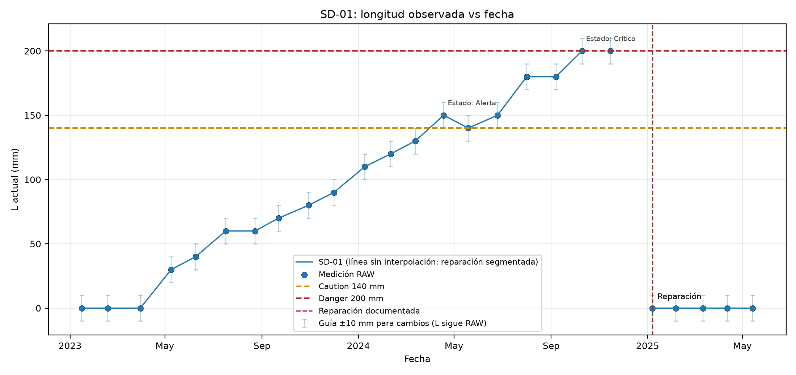
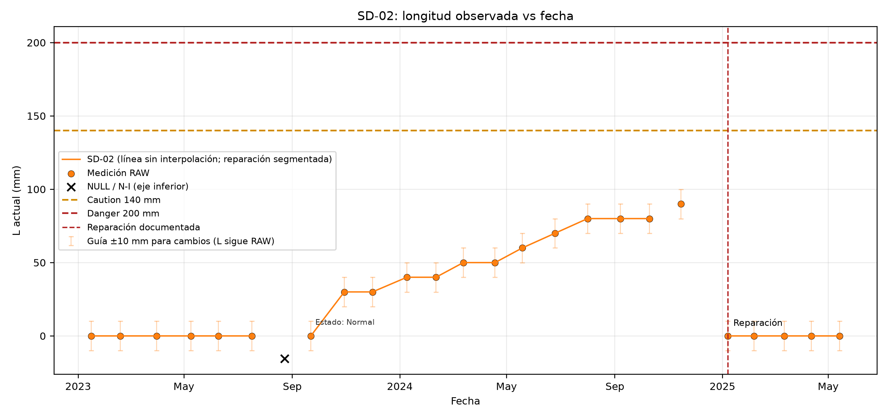
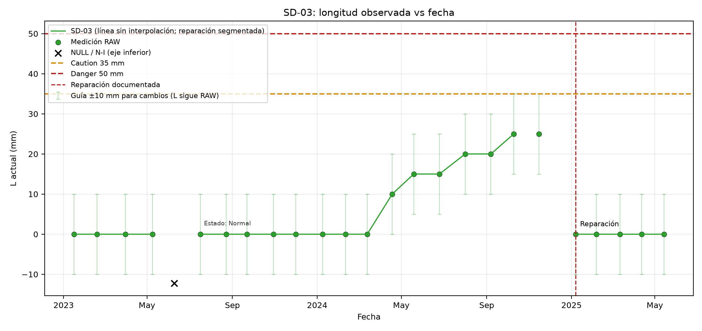
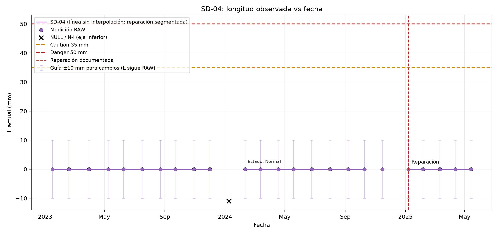
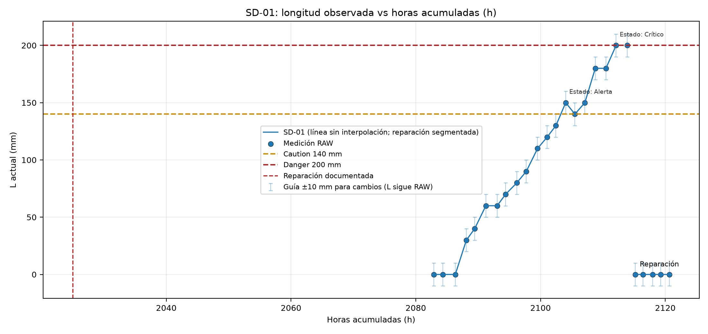
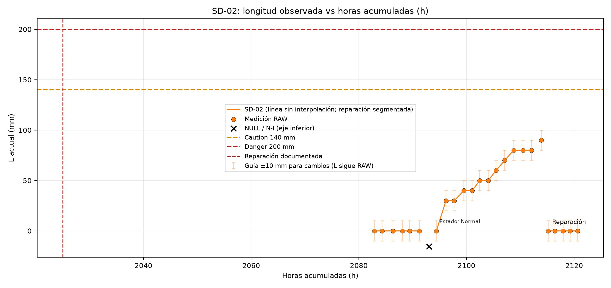
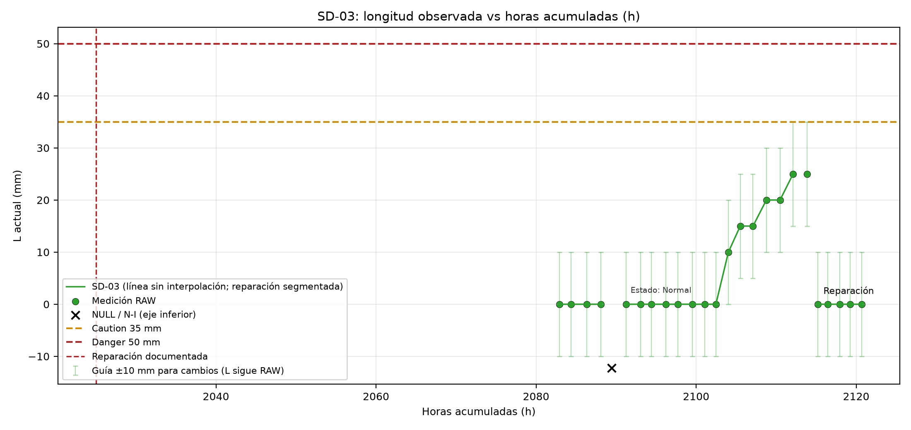
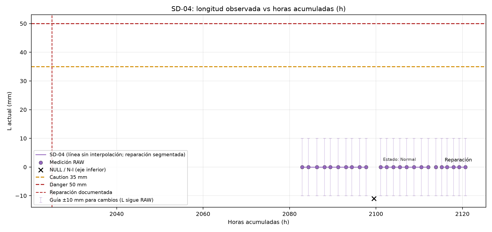
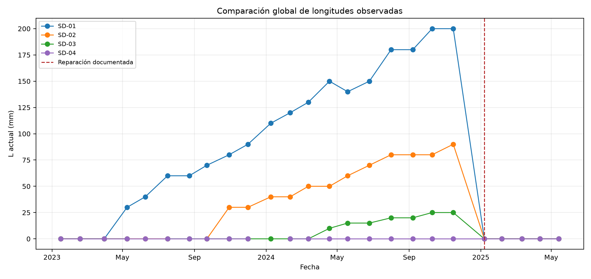
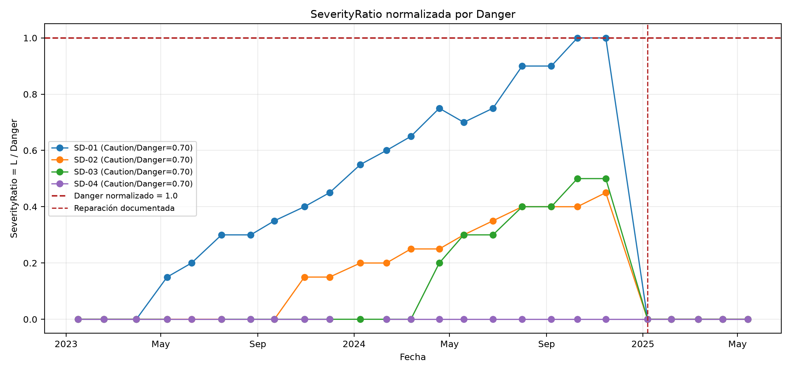
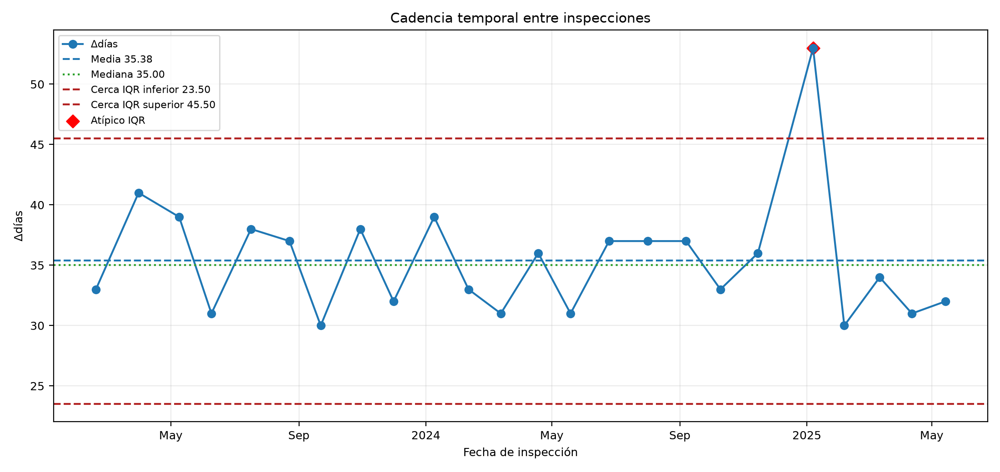
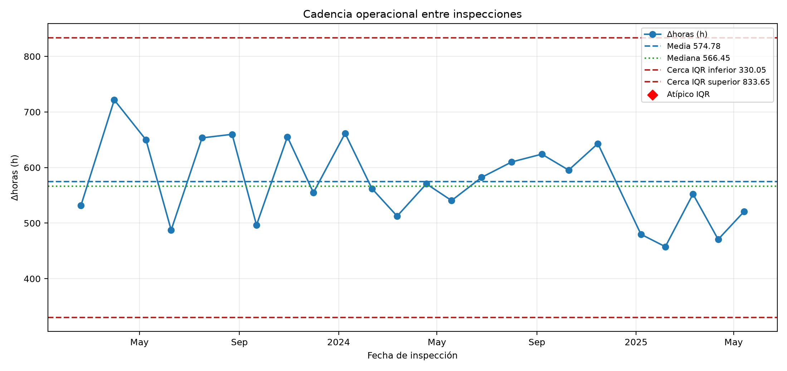
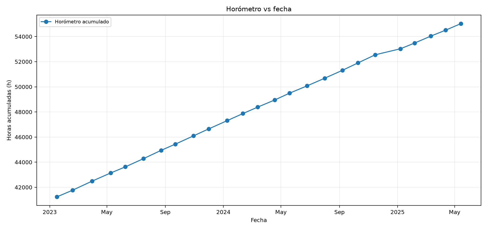
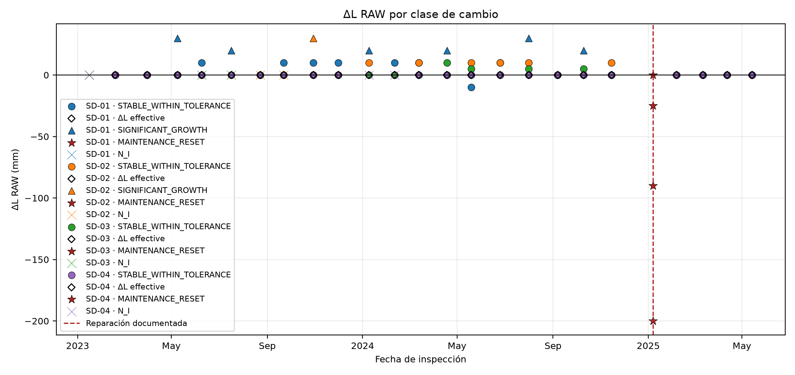
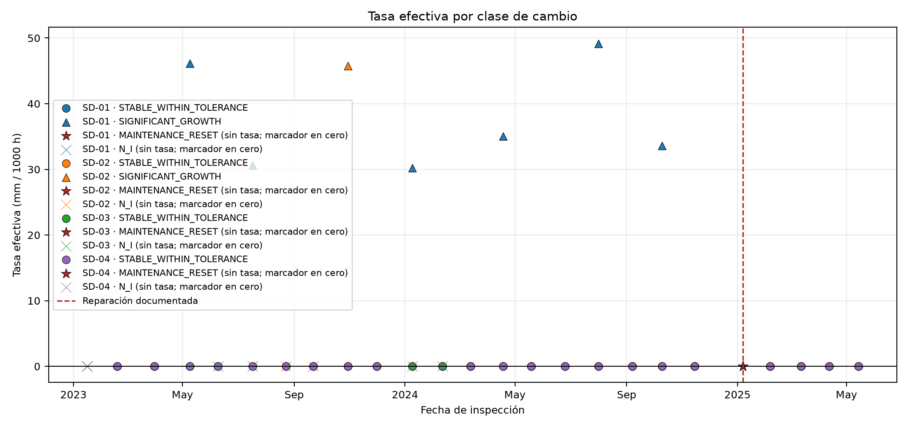
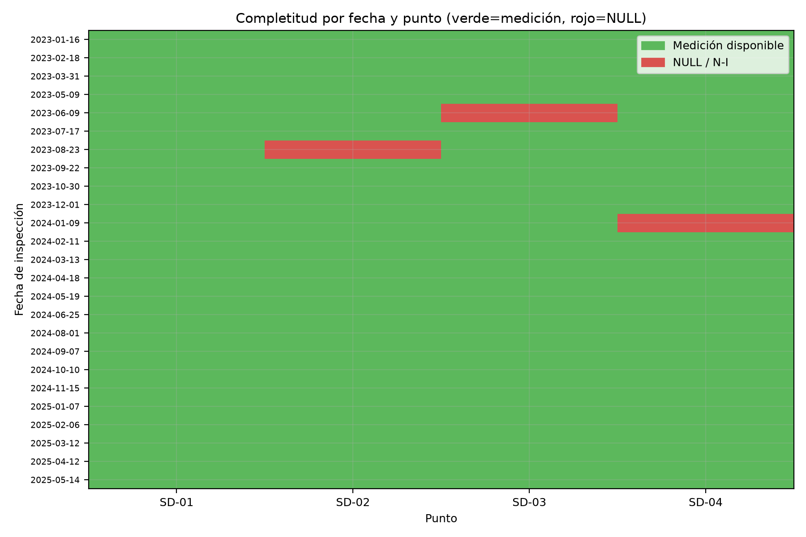
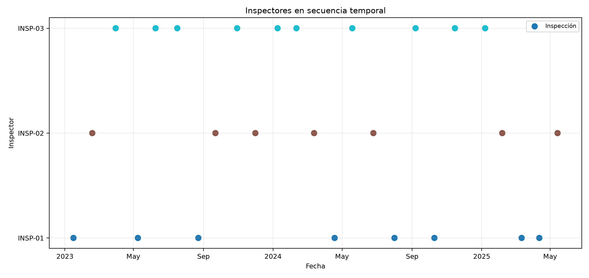
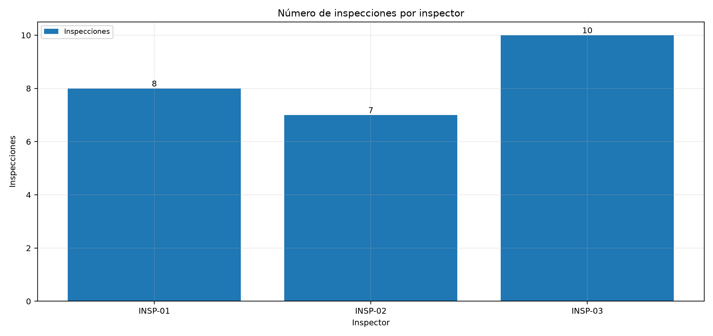
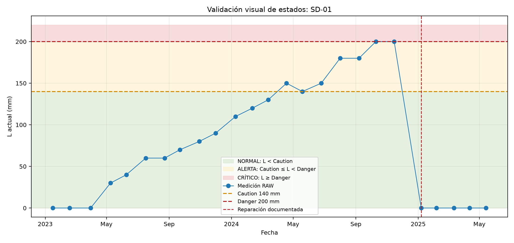
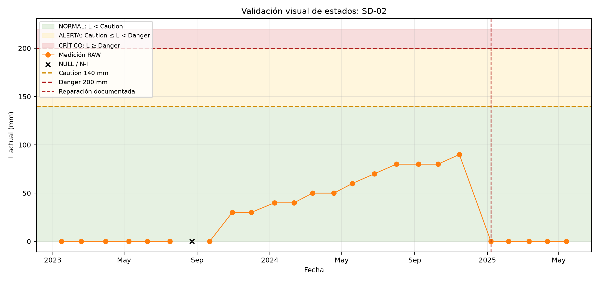
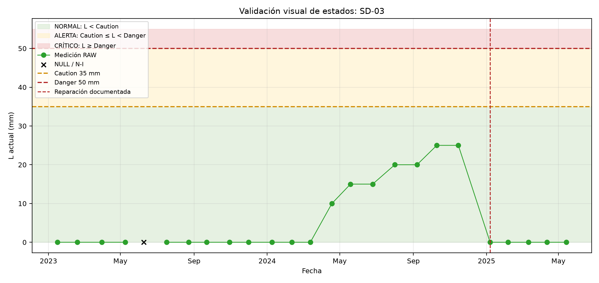
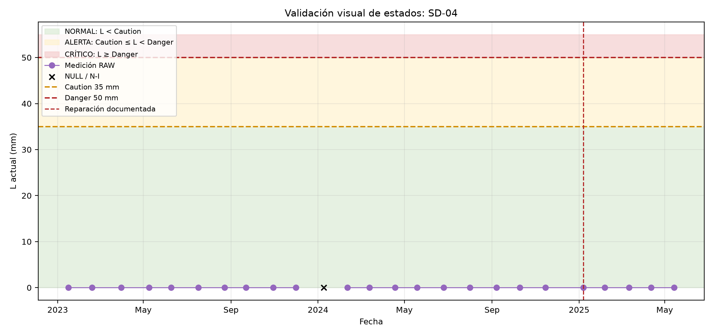